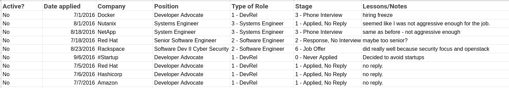
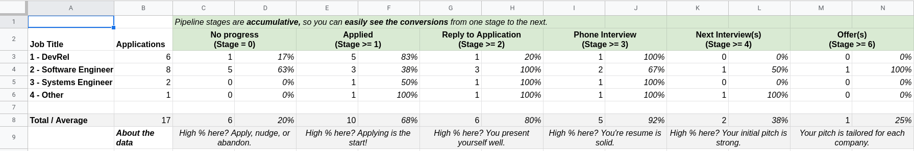

Sharing the Job Hunting Pipeline Blueprint
There is nothing like some unexpected job hunting to send a reasonably confident person into a spiral of panic. I recounted my own experience with recently in this post.
Thankfully, numbers can be our friends when panic wants to set in. Numbers have a clarifying effect on job hunting, shifting the broad stroke conclusions (“I’m never going to get an interview”) to percentages (“I get an interview 40% of the time, so I better keep trying”). Data reveals patterns, and those patterns can help a job seeker from feeling stuck. Or at least that’s what I’ve found so far. I’m happy to say I’ve helped quite a few people through the process of job searching, and each time this approach made it a better experience. In that way, I hope it could be helpful to you.
I call it the Job Hunting Pipeline Blueprint. It’s designed in an opinionated way to motivate you to see patterns in your application choices and to notice where you’re progressing and where you’re stuck.
Suppose you’re on the lookout for a new role, make a copy and give it a try. This post will be a companion piece, meant to share some guidelines to make the most of it.
A “no” doesn’t mean what you think it means
If you’re like me and tend to live in the gaps of the org chart, you might find yourself applying to a diverse set of companies for a wide range of job titles. There’s nothing wrong with that. What is a challenge, however, is seeing the pattern in chaos.
Without a system that’s capturing the pattern, each “no” feels like a no to you in totality: as an employee, sure, but it stings more than that. A no feels like its a no to you as a person. With a system, especially one that hinges on different job roles, you can see that a company says no to you in that job at that company at this time.
My trick to avoid the wrong conclusions is to pick three jobs you’re pursuing. I like three because it’s a magic number of sorts, but it also gives you the space to see what applications are working and which are not. You can slice the idea of different job titles in any way you please:
- A range of types of jobs you enjoy: Sales Engineer, Software Engineer, Developer Advocate
- A range of seniority levels: Developer Advocate, Sr Developer Advocate, Director of Develop Relations
- Any other data point about the company: Startup Software Engineer, (Late stage) Startup Software Engineer, Enterprise Software Engineer
It’s helpful to have distinct roles. Mutual exclusive separation makes the next steps clearer.
Review the stages of job hunting
I think about the job process as a linear funnel. It’s not perfect, but it helps in a lot of ways. The big ones being that you know when you’re making progress and where you’re stalling. Here are my defaults for the Blueprint:
- 0 - Never Applied: Because it’s easy to forget, in the excitement of imagining a new job, that we never got started. You can’t get what you don’t apply for.
- 1 - Applied, No Reply: Because it’s common not to hear back. See the estimates I lay out in the Pipeline tab of the Blueprint.
- 2 - Response, No Interview Yet: Because it tells us they want to hear more. It’s a sign the recruiter wants to move you forward. Help them build that momentum.
- 3 - Phone Interview: Because you passed the resume-only stage. Now it matters what you say. It’s the first serious look at your communication skills.
- 4 - Job Interview: In person or remote, you’re in the thick of it now. It’s about your knowledge, clarity, and presentation.
- 5 - Second Interview: Most roles will get more detailed at this point. You have to show expertise and have well-rehearsed, detailed stories of your success.
- 6 - Job Offer: You made it! It’s time to negotiate.
- 7 - Accepted: Celebrate your big decision.
Each stage marks a significant pivot point in what I want to study and how I talk about myself. In that way, I hope it’s helpful to use. The template should let you edit these without issue (without breaking), so you can make it your own. Let me know if you run into any trouble.
Track your applications
It’s not uncommon to apply to dozens of job postings before you land on the perfect mix of skills, role, and the elusive luck of the right timing. My first job out of college didn’t land until well over 70 applications. As recently as my last job hunt, I spoke with people about 30+ opportunities. It’s a lot to keep track of on our own, which is why the essential part of the Job Hunt Blueprint focuses on tracking.
The recommended tracker has all the main details, but then levels it up with the Type of Role and Stage dropdowns. We will see how they power the rest of the Blueprint next.

I also like to add Lessons to the mix. Maybe I missed out on a role due to a hiring freeze, or perhaps I bombed a specific question. These tidbits help me think about the next rounds more effectively.
Work the percentages in the Pipeline
I call the final tab the Pipeline since we’re following through with the funnel analogy. Here is where the work of this spreadsheet becomes worth it.

I designed an accumulating percentage funnel; as you succeed in each stage listed in Stages, you see the percentage increase of results. The trick is, the percentages are divided by job title. You have four buckets: the three you set at the start, and Other (since we all end up applying to some randoms along the way).
What I love about the resulting spreadsheet is that I offer little recommendations based on the stage you’re “stuck” in.
- No progress (Stage = 0): If you have a high percentage at this stage, you’re all enthusiastic with no follow-through just yet. Apply or abandon and move on.
- Applied (Stage >= 1): If you’re not making it past here, reach out to people you know at the company to help your application along.
- Reply to Application (Stage >= 2): If you’re stuck here, your resume presents well, but might not show you’re qualified. Keep engaging with the company to show interest.
- Phone Interview (Stage >= 3): Now you know your resume is solid. If you get stuck here, they may not feel you’re qualified.
- Next Interview(s) (Stage >= 4): Initial pitch is great. They feel you’re qualified. Now it’s up to you to show you are uniquely qualified for this role at this company.
And if you make it beyond that stage, you’re in. It’s time to negotiate.
Example insights
Blank spreadsheets don’t tell much of a story. That’s why I included an anonymized example Tracker and Pipeline to follow along. Here are some of the juicier takeaways you can see as you review the data.
- The job they wanted, DevRel, was not something they were interviewing well for. They ultimately decided to focus on other roles.
- This person discovered inertia. Over 60% of the jobs they thought they’d applied to had incomplete applications.
- When they did apply for other roles, they frequently got an interview. (92% conversion). Their resume was solid for those jobs, but not their wanted position.
- They found they heard back from Software Engineering jobs, but only when they actually applied (again, it’s common to forget to follow through at times - no shame for doing so, but now you can see it!).
- When they saw certain titles got more response than others, they focused and feel less concerned when not hearing back from their #1 choice.
Happy job hunting
Job searches can be terrible experiences. I’m sharing the Job Hunting Pipeline Blueprint with you because I’ve found it personally helpful in those moments when I feel most overwhelmed and lost. I hope it’s opinionated workflow and insights help you learn a bit more about yourself.
If you do give it a try, I would love to hear about it. Send a tweet or DM to @mbbroberg, or contact me through my website.
— Last but not least, I designed this project based on the work of Lewis C. Lin. If you’re looking to get into Product Management, check out his study sheets.